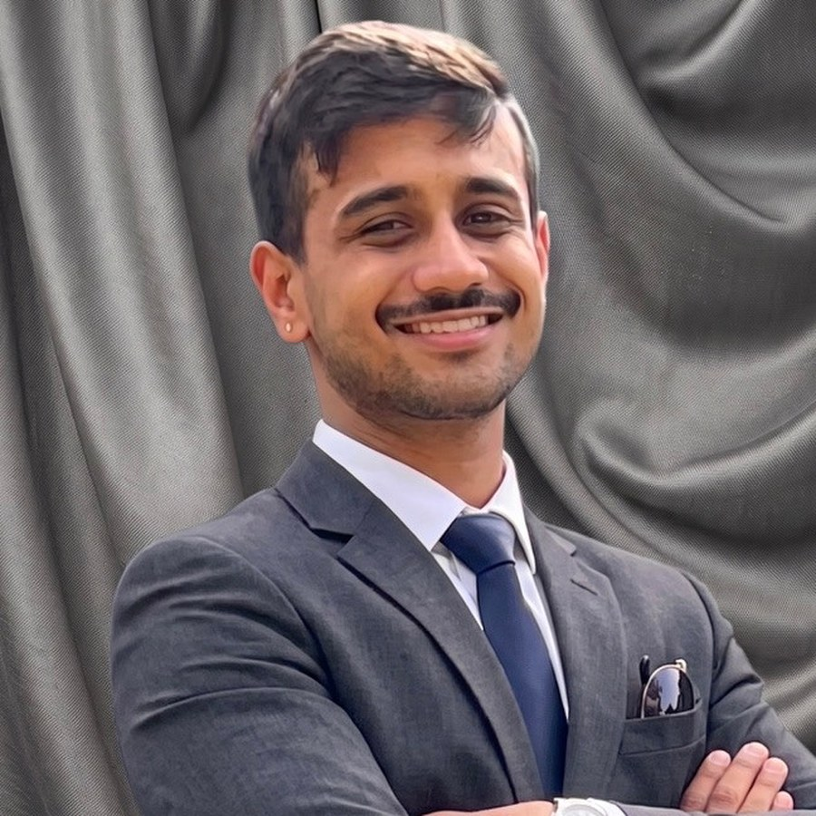

$ whoami »
System Architect Intern at Eccoi, working on sovereign AI. Master of Computing at the Australian National University. Previously 3+ years at Accenture building AIOps tools and explainable AI systems.
I'm a software engineer with a focus on machine learning: from training generative models from scratch to building AI systems that people can actually understand and trust.
At Accenture, I spent over three years building AIOps tooling, explainable AI systems, and internal chatbots. Now at ANU, I'm going deeper into the foundations: generative modelling, transformers, and human-computer interaction. And at Eccoi, I've stepped into systems architecture for sovereign AI.
Alongside my studies, I teach Human-Computer Interaction at the ANU as a Casual Sessional Academic, serve as a Student Ambassador for the College of Systems and Society, and represent its postgraduate cohort as the elected ANUSA Postgraduate Representative. I've also published research on AI in material science, electric propulsion, and blockchain; see publications.
I now work on sovereign AI at Eccoi. Long term, I want to build products that democratise machine learning: from national-scale AI capability to creative solutions for problems in grassroots communities.
Generative models are my happy place: flow matching, diffusion, and transformers built from scratch in PyTorch. I like knowing what's under the hood, not just calling the API.
Give me a gnarly problem and I'm gone for the afternoon: algorithm puzzles, debugging sessions that turn into detective stories, and systems that finally click at 2am.
Where most of my reading time goes: airpower doctrine, procurement politics, and how sovereign capability actually gets built rather than announced. An automobile engineer by first degree, so I read it as an engineering problem first. Hence the Mirage in the corner.
Away from the screen: political history, theology, and an ever-growing queue of long-form analysis. I like understanding why institutions, ideas, and power move the way they do.
Architecting the Sovereign AI Community of Practice (SAICOP): defining architectural principles and the system context model, assessing and shortlisting platforms, and proving the conceptual architecture end-to-end, aligned to Australian Government delivery, security, and procurement realities.
Teaching HCI at the ANU from Semester 2, 2026: running tutorials and supporting students through design thinking, prototyping, and evaluation coursework.
Built Ingrain, an AIOps tool generating predictive ML pipelines for automated IT ticket resolution. Integrated Explainable AI and dynamic model-performance reporting, designing the supporting UIs from scratch. Built Quasar++, a ChatGPT API-based chatbot for querying internal documents. Formally Specialized in Data Science & Machine Learning; rated Advanced in Machine Learning, Python, UX Design, Solution Architecture, and Cloud Application Architecture.
Designed and implemented full-stack web systems using .NET, MVC, React, HTML, CSS, and JavaScript; delivered a Hospital Logistics System to manage COVID-19 operational workflows.
Elected representative for the CSS postgraduate cohort, advocating for student interests and liaising with faculty and administration.
Representing the College at recruitment events and school visits; supporting prospective-student transition and onboarding.
Trained an ML pipeline on historical patient records for early detection of threatening conditions, reaching ~80% accuracy on malignant breast cancer detection.
Studied sensor-based mineral detection and drafted a feasibility study for automated coal grade determination using computer vision and AI.
Hands-on with just-in-time manufacturing; worked on CNC machine programming and cam design optimisation for higher efficiency using machine learning.
Coursework in deep learning (CNNs, RNNs, transformers, generative models), advanced ML and generative AI (diffusion models, LLMs), statistical machine learning, HCI, and software engineering.
Published peer-reviewed research on electric propulsion for fixed-wing aircraft during undergraduate studies.
Flow matching from first principles: comparing v- vs x-prediction across data dimensions (x-prediction stays stable where v-prediction collapses), plus a MeanFlow implementation with Jacobian-vector-product targets.
A 30M-parameter GPT built from scratch in PyTorch and trained on just 3.7M tokens of five-sentence stories, testing depth vs width, RoPE + RMSNorm, and DPO fine-tuning in the data-scarce regime (25.77 → 24.67 PPL).
Stress-testing minGRU's "Were RNNs All We Needed?" claims against a LLaMA-recipe Transformer and a causal gMLP on algorithmic reasoning: a 27-experiment grid showing where each architecture breaks, plus a phase transition in Transformer copy learning.
A PWA for sustainable food shopping: real-time barcode scanning, live product lookup via Open Food Facts, allergen/expiry/carbon flagging, and A/B interaction logging for HCI research.
A native Android social app (post feed, reactions, DMs, and admin moderation) applying Singleton, Factory, and Iterator patterns across a layered DAO architecture.
Covered institute events and wrote long-form pieces on global issues; op-eds on the Me-Too movement and gun control received recognition and acclaim.
Led teams of five to ten organising cultural-fest events (EQ-IQ, Psychology-101): ideation, logistics, and participant engagement for an inclusive atmosphere.
Regular visits to a home for children with intellectual and developmental disabilities with the Rotary Club; sourced and distributed food, medicine, and rebuilding materials in West Bengal after Cyclone Amphan (2020).
Das, M. · DOI 10.30919/esg1183. Also presented in work-in-progress form at RTCMM 2023.
Momaya, V.J., Das, M. et al. · DOI 10.57159/gadl.jcmm.2.5.23071
Karthik, A., Das, M. et al. · DOI 10.30919/es8d573
I'm open to opportunities in software engineering and machine learning, based in Canberra, ACT. Reach me by email or on LinkedIn.